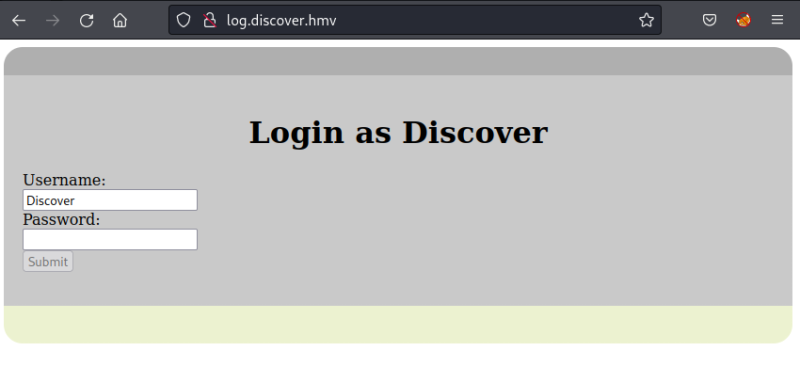
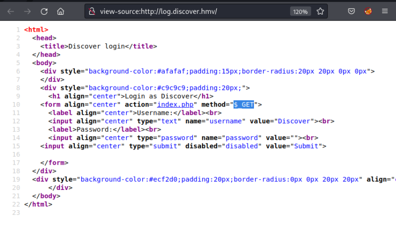
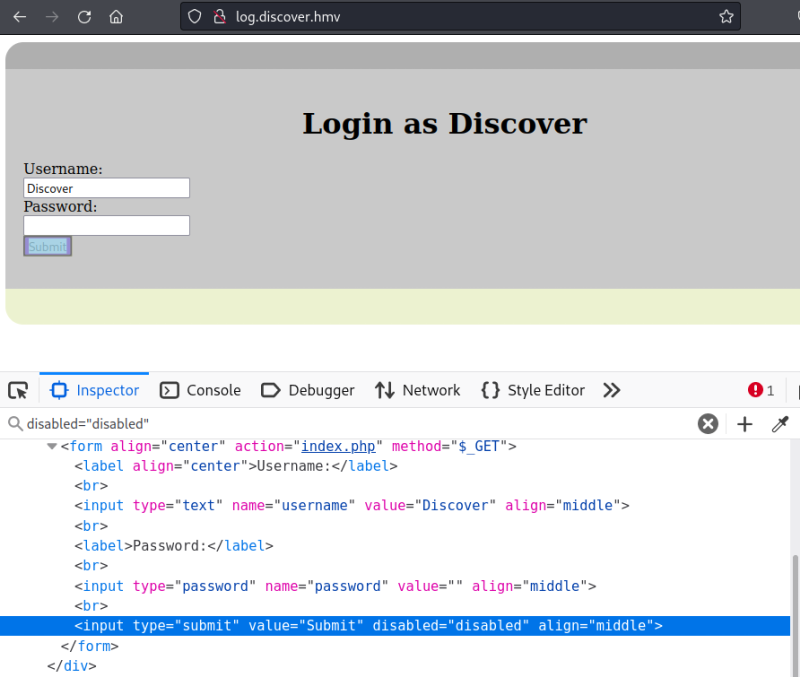

3.2 Subdomain pages
1. Visit http://log.discover.hmv/.

2. Show the source code.

You can see the form methos is “GET”, so maybe you can execute commands on the victim's machine.
3. Enable the “Submit” button. Go to “Dev. Options” in your browser and delete the string disabled="disabled".

4. Introduce a password and click on “Submit”.
You'll be redirected to http://log.discover.hmv/index.php?username=Discover&password=1234.